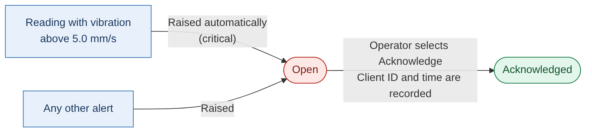

About alerts
An alert is a notice that EdgePulse raises when a device needs attention.
This topic applies to EdgePulse 1.2. Operators use alerts to see which devices need attention and to record that someone has reviewed them.

Note:
EdgePulse is a fictional product created for a documentation portfolio. Its REST API and dashboard are real and runnable.
Alert states
- Open
- Nobody has acknowledged the alert.
- Acknowledged
- An operator has reviewed the alert. EdgePulse records who acknowledged it and when.
Automatic critical alerts
When a device reports vibration above 5.0 mm/s, the platform raises a critical alert automatically.